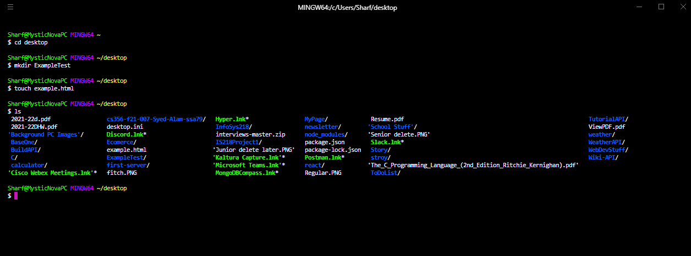

Here are some Linux commands that you will need to use with Git, Docker, and Azure.
LINUX
pwd - shows present working directory
ls - lists files in the current directory
cd - changes directory (use cd .. to go up a directory)
Example:
Current directory: /home
cd student
New directory: /home/student
mkdir - makes a directory
Example: mkdir test
Creates test directory in current directory
mv - renames files & directories
Example: mv index.htm index.html
Renames the index.htm file to index.html
rm - removes/deletes files (use -r to remove folder with recursion)
Example: rm file1
Removes file1 from current directory
touch - creates an empty file
Example: touch file1
Creates a file named file1
vi - opens vi editor to edit files
Commands to use in VI:
i - command to enter Insert mode to be able to type
Delete key - to delete anything typed to make the corrections
Esc key - to get back to Normal mode
ESC :wq - to enter normal mode, write the file (save it), and quit
Example to follow
